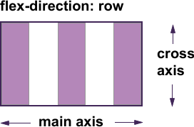
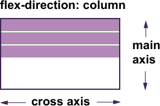

The Flexible Box Module, usually referred to as flexbox, is a module of CSS that defines a CSS box model
optimized for user interface design, and the layout of items in one dimension. It was also designed as a
method that could offer space distribution between items in an interface and powerful alignment
capabilities.
When we describe flexbox as being one dimensional we are describing the fact that flexbox deals with
layout
in one dimension at a time — either as a row or as a column. This can be contrasted with the
two-dimensional
model of CSS Grid Layout,
which controls columns and rows together.
Simply put; CSS Flexbox is a set of css properties that enables the creation of one dimensional
layout.
The arrangement of flex items within the container works on the principle of its axes. There are two
axes in
css flexbox; the main axis and the cross axis. The main axis is the principal direction of the
flex
items while the cross axis runs perpendicular to the main axis.
- The main axis: The main axis is defined by flex-direction. If row or row-reverse is
used,
the
main axis will run along the row in the inline direction. If column or column-reverse is used, the main
axis will run from the top of the page to the bottom — in the block direction. The arrangement of items
along the main axis can be achieved using the justify-content property. Its acceptable values are
flex-start, flex-end, center, space-between, space-around, space-evenly.
- The cross axis: The cross axis runs perpendicular to the main axis, therefore if the
flex-direction (main axis) is set to row or row-reverse the cross axis runs down the column and vice
versa.
The arrangement of items along the cross axis can be achieved using the align-items property. Its
acceptable values are flex-start, flex-end, center, stretch and baseline.
 
Understanding which axis is which is important when we start to look at aligning and justifying flex items;
flexbox features properties that align and justify content along one axis or the other.
Why use flexbox?? In a perfect world of browser support, the reason you'd choose to use flexbox is
because
you want to lay a collection of items out in one direction or another. As you lay out your items you want
to
control the dimensions of the items in that one dimension, or control the spacing between items. These
are
the uses that flexbox was designed for.
- Navigation: Alignment of items within the navigation bar is easier done with flexbox. A typical
example;
After listing the flex items within the flex container, align the horizontally using the
justify-content
and align-items values.
nav ul {
display: flex;
justify-content: space-between;
}
If I wanted all of my navigation items to have equal width, then I might use flex: auto, which is
the
shorthand for flex: 1 1 auto — all items grow and shrink from a flex-basis of auto. This would mean
that
the longer item would have more space.
nav ul {
display: flex;
}
nav li {
flex: auto ;
}
- Centering Items: In the past, alignment of items vertically used to be a tedious task, it has been
made
straightforward using the alignment properties in flexbox, as the following example shows.
.box {
display: flex;
align-items: center;
justify-content: center;
}
.box div {
width: 100px;
height: 100px;
}
- Card layout pushing footer down: Whether you use flexbox or CSS Grid to lay out a list of card
components, these layout methods only work on direct children of the flex or grid component. This means
that if you have variable amounts of content, the card will stretch to the height of the grid area or
flex
container. Any content inside uses regular block layout, meaning that on a card with less content the
footer will rise up to the bottom of the content rather than stick to the bottom of the card. Flexbox
can
solve this. We make the card a flex container, with flex-direction: column. We then set the content
area to
flex: 1, which is the shorthand for flex: 1 1 0 — the item can grow and shrink from a flex basis of 0.
As
this is the only item that can grow, it takes up all available space in the flex container and pushes
the
footer to the bottom. If you remove the flex property from the live example you will see how the footer
then moves up to sit directly under the content.
.card {
display: flex;
flex-direction: column;
}
.card .content {
flex: 1 1 auto;
}
Browser support for flexbox is excellent, and the majority of browsers do not need a prefix at this
point.
Safari was the last of the major browsers to remove prefixes, with the release of Safari 9 in 2015. The
two
browsers you should still keep in mind for cross-browser compatibility are:
- Internet Explorer 10, which implemented the display: flexbox version of the specification with the
-ms-
prefix.
- UC Browser, which still supports the 2009 display: box version only with the -webkit- prefix.
Note also that Internet Explorer 11 supports the modern display: flex specification however it has a
number of bugs in the implementation.